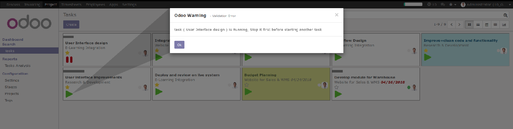

Start your task ether from kanban or form view
Validation popup when you try to start task while another on is running
popup wizard while you finished your task to input your timesheet description and show you time spending on the task
Auto timesheet calculation
Filter with running tasks
When you apply filter
uabdulaziz@zadsolutions.com / umar_3ziz@hotmail.com